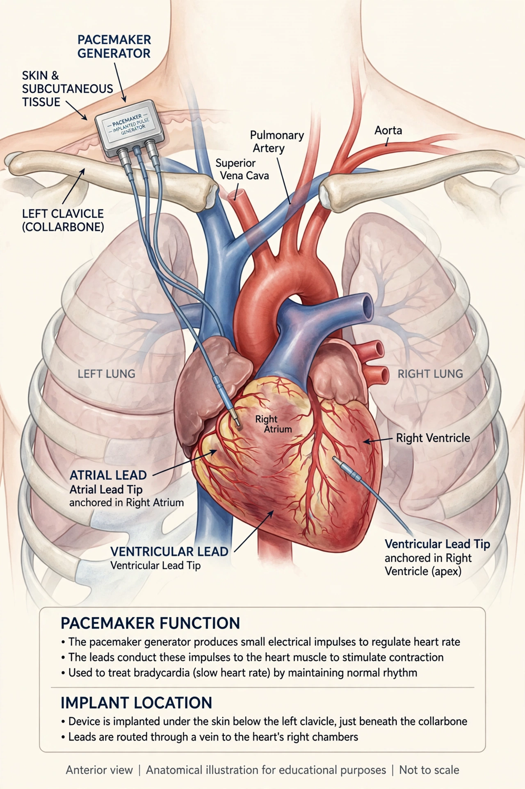

Artificial cardiac pacemaker
| Pacemaker | |
|---|---|
| Type | Implantable medical device |
| Uses | Bradycardia, heart block, some heart failure |
| First implant | 1958 (Arne Larsson, Sweden) |
| Power source | Lithium battery (typically 5–15 years) |

An artificial cardiac pacemaker is an implantable medical device that generates electrical pulses to cause the heart muscle to contract and maintain an adequate heart rate when the heart's natural conduction system is too slow or blocked. Modern pacemakers are programmable devices consisting of a pulse generator — a battery and circuitry sealed in a titanium case — and one or more leads, or, in newer designs, a self-contained leadless capsule implanted directly in the heart.
Indications
Pacemakers are most commonly implanted for symptomatic bradycardia, sick sinus syndrome, and atrioventricular block. Biventricular devices deliver cardiac resynchronisation therapy in selected patients with heart failure. They differ from implantable cardioverter-defibrillators (ICDs), which can also deliver shocks to treat dangerous tachyarrhythmias.
History
External pacing devices were developed in the early 1950s by Paul Zoll and others. The first fully implantable pacemaker was placed in Arne Larsson in Stockholm in 1958 by surgeon Åke Senning, using a device designed by Rune Elmqvist; Larsson went on to receive more than twenty devices and outlived both men. Wilson Greatbatch's improved design in 1960, using long-life batteries, made the technology practical worldwide.
Function and follow-up
Devices sense intrinsic heart activity and pace only when needed ("demand" pacing). Standardised codes (e.g. DDDR) describe the chambers paced and sensed and whether rate response is enabled. Patients are followed in device clinics, increasingly by remote monitoring, and are advised about electromagnetic interference, though most modern devices are well shielded and many are MRI-conditional.
See also: Cardiac conduction system, Implantable cardioverter-defibrillator, Electrocardiography.